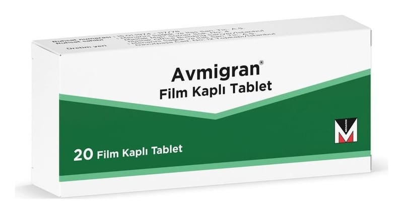

Avmigran Film Kaplı Tablet, 20 Adet

Ne için kullanılır
KT · Bölüm 1• AVMİGRAN, her film kaplı tabletinde ergotamin tartarat, mekloksamin dihidrojen sitrat, kafein, parasetamol etkin maddelerini içeren bir ilaçtır. • AVMİGRAN kırmızı-kahverengi renkli, yuvarlak, bikonveks film kaplı tablet şeklinde bir üründür
• AVMİGRAN çarpıntı hissi, sersemlik ve mide bulantısıyla (Cephalea vasomotorica- histaminik baş ağrısı, Horton sendromu) birlikte ortaya çıkan ataklar halinde görülen baş ağrılarını ve kısa migren ataklarını gidermek için kullanılır.